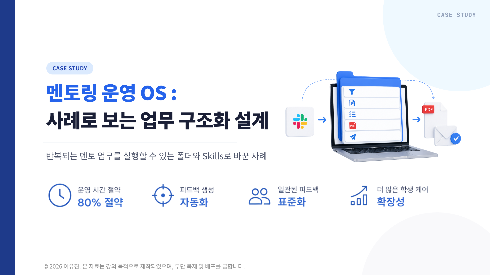
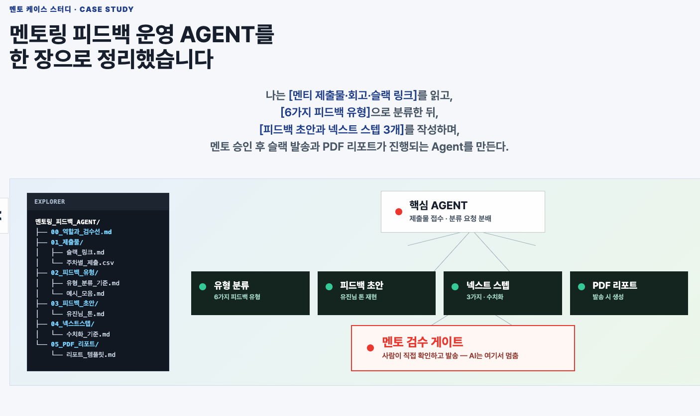
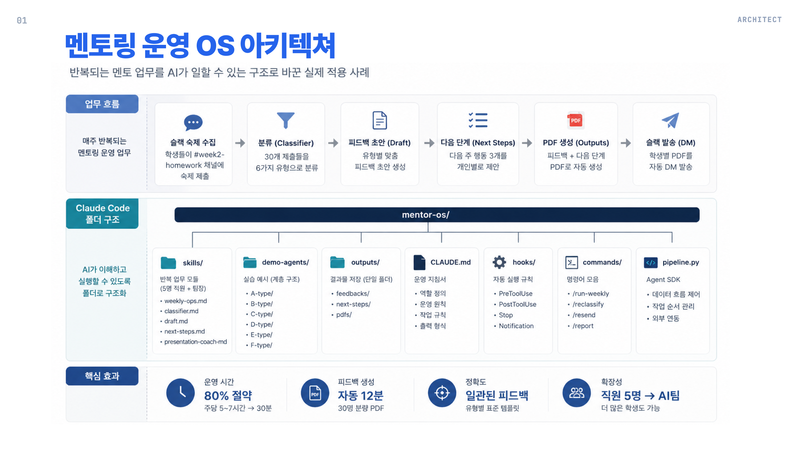
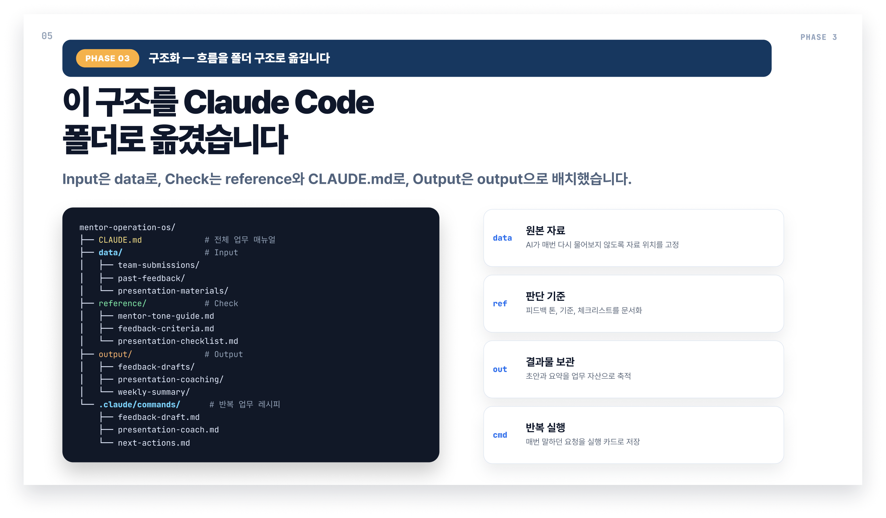
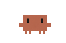

AGENT
반복 업무에
기준을 남기는
Agent 설계
사람의 경험과 기준을 폴더와 작업 순서로 남겨,
반복 업무를 Agent가 실행할 수 있는 구조로 바꿉니다.
멘토 피드백 PDF와 멘트 제작에서 시작해 운영 시스템까지YUJIN FLOW
사람의 경험과 기준을 폴더와 작업 순서로 남겨,
반복 업무를 Agent가 실행할 수 있는 구조로 바꿉니다.
멘토 피드백 업무를 문제정의하고, PDF와 멘트 제작 역할을 나누고, 검수하고, 다음 멘티에게 쓸 기억까지 설계합니다.
피드백에서 반복되는 병목과 판단을 한 문장으로 정리합니다.
진단, PDF 구성, 멘트 작성, 검수의 책임을 나눕니다.
PDF와 멘트가 같은 진단을 말하는지 확인합니다.
멘티별 피드백 기록과 반복 패턴이 다음 실행에 쌓이게 합니다.
멘티 과제를 읽고 핵심 진단을 잡은 뒤, 격식 있는 PDF와 자연스러운 전달 멘트를 각각 만듭니다.
멘티 제출물, 지난 피드백, 과제 기준, 멘토 메모
이번 멘티의 핵심 문제와 다음 행동을 매번 다시 정리합니다.
PDF와 멘트가 다른 이야기를 하거나, 행동 지시가 흐려질 수 있습니다.
멘티별 기록, 반복 패턴, 다음 확인 포인트가 계속 쌓여야 합니다.


폴더의 자료와 기준을 읽고 결과물 파일을 남긴 뒤, 사람 검수 지점에서 멈춥니다.



제출물을 확인하고 네 Agent에 작업을 나눈 뒤, 결과를 모아 멘토의 최종 판단을 기다립니다.
제출물에서 핵심 신호를 뽑습니다.
정해진 구조로 피드백 리포트를 만듭니다.
멘티가 바로 움직일 전달 멘트를 만듭니다.
PDF와 멘트가 같은 진단인지 확인합니다.
좋은 피드백이라는 말 대신, PDF와 멘트가 어떤 상태면 통과인지 미리 정합니다.
PDF와 멘트가 같은 핵심 문제를 말하는가?
멘티가 다음에 무엇을 할지 바로 알 수 있는가?
PDF는 분석체, 멘트는 자연스러운 대화체인가?
과장, 단정, 개인정보 노출 없이 발송 가능한가?
멘티 제출물, 지난 PDF, 과제 기준, 멘토 메모
핵심 문제, 우선순위, 다음 행동, 멘티별 톤
진단 정리, PDF 작성, 멘트 작성, 검수
멘티별 피드백 이력, 반복 패턴, 다음 확인 포인트
멘티 과제가 들어오면 진단을 만들고, PDF와 멘트를 함께 제작한 뒤 승인과 기록으로 다음 피드백을 준비합니다.